A Usage Template for the R Package msDiaLogue
Shiying Xiao\(^1\), Charles Watt\(^1\), Jennifer C. Liddle\(^2\), Jeremy L. Balsbaugh\(^2\), Timothy E. Moore\(^3\)
\(^1\)Department of Statistics, UConn
\(^2\)Proteomics and Metabolomics
Facility, UConn
\(^3\)Statistical Consulting Services,
UConn
2024-04-01
Source:vignettes/usage_template.Rmd
usage_template.RmdPreprocessing
The function preprocessing() takes a .csv
file of summarized protein abundances, exported from
Spectronaut. The most important columns that need to be
included in this file are: R.Condition,
R.Replicate, PG.ProteinAccessions,
PG.ProteinNames,
PG.NrOfStrippedSequencesIdentified, and
PG.Quantity. This function will reformat the data and
provide functionality for some initial filtering (based on the number of
unique peptides). The steps below describe the functions that happen in
the Preprocessing code.
1. Loads the raw data
If the raw data is in a .csv file Toy_Spectronaut_Data.csv, specify the
fileNameto read the raw data file into R.If the raw data is stored as an .RData file Toy_Spectronaut_Data.RData, first load the data file directly, then specify the
dataSetin the function.
2. Filters out identified proteins that exhibit “NaN” quantitative values
NaN, which stands for ‘Not a Number,’ can be found in the PG.Quantity column for proteins that were identified by MS and MS/MS evidence in the raw data, but all peptides from that protein lack an associated integrated peak area or intensity. This usually occurs in low abundance peptides that exhibit intensities close to the limit of detection resulting in poor signal-to-noise (S/N) and/or when there is interference from other co-eluting peptide ions with very similar or identical m/z values that lead to difficulty in parsing out individual intensity profiles.
3. Applies a unique peptides per protein filter
General practice in the proteomics field is to filter out proteins from which only 1 unique peptide was identified. This adds increased confidence to results already filtered to a 1% false discovery rate (FDR), since proteins that are identified with 2 or more peptides are less likely to be false positives. We recommend filtering out these protein entries in order to focus on more confident targets in the identified proteome. However, 1-peptide proteins can still be observed in the original protein report from Spectronaut.
4. Adds accession numbers to identified proteins without informative names
Spectronaut reports contain 4 different columns of identifying information:
-
PG.Genes, which is the gene name (e.g. CDK1). -
PG.ProteinAccessions, which is the UniProt identifier number for a unique entry in the online database (e.g. P06493). -
PG.ProteinDescriptions, which is the protein name as provided on UniProt (e.g. cyclin-dependent kinase 1). -
PG.ProteinNames, which is a concatenation of an identifier and the species (e.g. CDK1_HUMAN).
Every entry in UniProt will have an accession number, but may not
have all of the other identifiers, due to incomplete annotation. Because
Uniprot includes entries for fragments of proteins and some proteins
entries are redundant, a peptide can match to multiple entries for the
same protein, which generates multiple possible identifiers in
Spectronaut. Further, the ProteinNames
entry in Spectronaut can switch formats: the preference
is accession number and species, but can also be gene name and species
instead.
This option tells msDiaLogue to substitute the accession number for an identifier if it tries to pull an identifier from a column with no information.
NOTE: Not all proteins can be identified unambiguously. In many cases, the identified peptides can be found in multiple protein sequences, which yields a protein group or protein cluster rather than a single protein identification. When this happens, the accession numbers for all potential matches are concatenated into one string, separated by periods. When you see long strings of multiple identifiers later in your data processing, this is why. Spectronaut sorts these alphanumerically, so you should not assume that the first protein in the list is most likely to be correct (as is the case in other search algorithms).
5. Saves a document to your working directory with all filtered out data, if desired
If saveRm = TRUE, the data removed in step 2
(preprocess_Filtered_Out_NaN.csv) and step 3
(preprocess_Filtered_Out_Unique.csv) will be saved in the
current working directory.
As part of the preprocessing(), a histogram of \(log_2\)-transformed protein abundances is
provided. This is a helpful way to confirm that the data have been read
in correctly, and there are no issues with the numerical values of the
protein abundances. Ideally, this histogram will appear fairly
symmetrical (bell-shaped) without too much skew towards smaller or
larger values.
## if the raw data is in a .csv file
fileName <- "../tests/testData/Toy_Spectronaut_Data.csv"
dataSet <- preprocessing(fileName,
filterNaN = TRUE, filterUnique = 2,
replaceBlank = TRUE, saveRm = TRUE)NOTE: preprocessing() does not perform
a transformation on your data. You still need to use the function
transform().
## if the raw data is in an .Rdata file
load("../tests/testData/Toy_Spectronaut_Data.RData")
dataSet <- preprocessing(dataSet = Toy_Spectronaut_Data,
filterNaN = TRUE, filterUnique = 2,
replaceBlank = TRUE, saveRm = TRUE)
#> Warning: Removed 25 rows containing non-finite outside the scale range
#> (`stat_bin()`).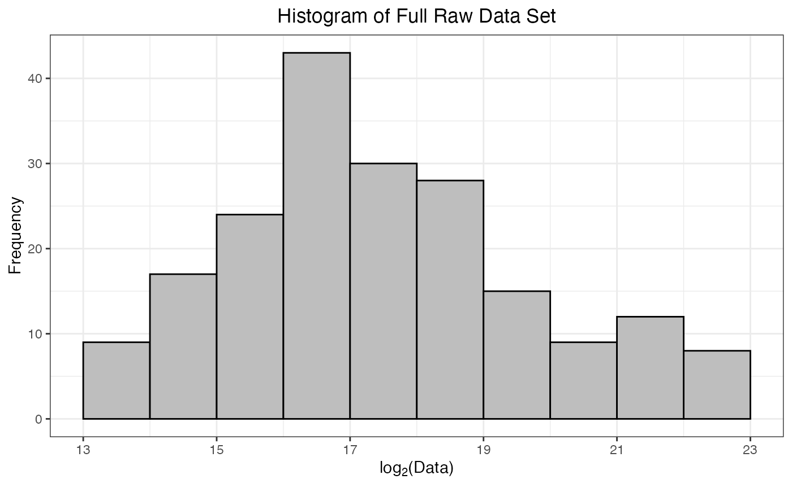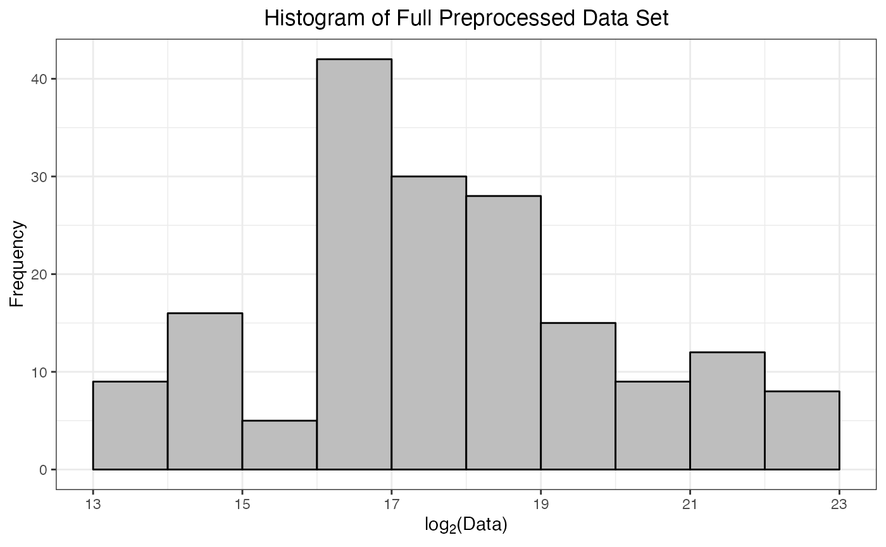
| R.Condition | R.FileName | R.Replicate | RAB3D_HUMAN | ADH1_YEAST | LYSC_CHICK | BGAL_HUMAN | SYTC_HUMAN | CYC_BOVIN | PA1B2_HUMAN | TEBP_HUMAN | UAP1_HUMAN | B3GLT_HUMAN | NFXL1_HUMAN | VPS36_HUMAN | T126B_HUMAN | XPO4_HUMAN | ORC3_HUMAN | BAG5_HUMAN | ANGL3_HUMAN | ZC11B_HUMAN | MAP11_HUMAN |
|---|---|---|---|---|---|---|---|---|---|---|---|---|---|---|---|---|---|---|---|---|---|
| 100fmol | 20230414_jcl_msDIAlogue_HeLa-6mix_100fmol_60min_DIA_Wat25cmBEH_1 | 1 | 105497.85 | 1254717.6 | 1060555.9 | 224187.0 | 2410569 | 464875.9 | 181490.1 | 4189765 | 345700.1 | 24545.98 | 69218.43 | 91874.47 | 13348.120 | 426354.1 | 88630.06 | 227958.8 | 32128.59 | NA | NA |
| 100fmol | 20230414_jcl_msDIAlogue_HeLa-6mix_100fmol_60min_DIA_Wat25cmBEH_2 | 2 | 97413.77 | 1220362.0 | 1059899.6 | 227931.1 | 2396752 | 477952.2 | 175121.3 | 4230263 | 339977.9 | 25938.39 | 69400.23 | 86165.41 | 9359.288 | 395663.8 | 87888.85 | 217351.5 | 31688.79 | NA | NA |
| 100fmol | 20230414_jcl_msDIAlogue_HeLa-6mix_100fmol_60min_DIA_Wat25cmBEH_3 | 3 | 92411.47 | 1362763.1 | 1055651.2 | 219066.4 | 2358946 | 446657.5 | 181810.5 | 4384376 | 326688.5 | 22291.07 | 71694.90 | 91814.37 | 10157.106 | NA | 88932.05 | 202663.6 | 34704.88 | 172537.11 | 489415.6 |
| 100fmol | 20230414_jcl_msDIAlogue_HeLa-6mix_100fmol_60min_DIA_Wat25cmBEH_4 | 4 | 100762.16 | 1270573.4 | 1060255.8 | 209789.4 | 2388449 | 458660.3 | 165448.0 | 4272664 | 333170.9 | 23725.73 | 66992.01 | 99058.58 | 13830.882 | NA | 87089.87 | 230624.2 | 29539.77 | 172585.23 | 507468.9 |
| 100fmol | 20230414_jcl_msDIAlogue_HeLa-6mix_100fmol_60min_DIA_Wat25cmBEH_5 | 5 | 99035.44 | 1234380.8 | 1021856.6 | 206950.5 | 2325342 | 473778.7 | 173582.3 | 4066718 | 333222.6 | 20868.58 | 66214.05 | 94079.65 | 13272.666 | NA | 83254.25 | 224590.7 | 23633.19 | 136210.98 | NA |
| 50fmol | 20230414_jcl_msDIAlogue_HeLa-6mix_50fmol_60min_DIA_Wat25cmBEH_1 | 1 | 90283.59 | 686584.4 | 601005.6 | 293384.3 | 2866171 | 251238.0 | 189993.1 | 5028592 | 368101.3 | 46684.45 | 66062.98 | 118289.54 | 8576.864 | NA | 114119.27 | 272555.8 | 24733.25 | 60972.31 | 583439.9 |
| 50fmol | 20230414_jcl_msDIAlogue_HeLa-6mix_50fmol_60min_DIA_Wat25cmBEH_2 | 2 | 103628.16 | 764785.9 | 580436.1 | 312817.6 | 3090666 | 272467.7 | 211132.2 | 5039420 | 412326.3 | 41758.35 | 72337.18 | 116845.31 | 16022.972 | NA | 112596.48 | 305347.0 | 29952.96 | NA | 603853.8 |
| 50fmol | 20230414_jcl_msDIAlogue_HeLa-6mix_50fmol_60min_DIA_Wat25cmBEH_3 | 3 | 102738.70 | 742963.7 | 588663.6 | 323090.6 | 2981510 | 261662.1 | 184879.4 | 5044124 | 387863.9 | 41997.87 | 71494.94 | 114235.21 | 18709.572 | NA | 111635.11 | 292004.2 | NA | 112139.66 | 605655.4 |
| 50fmol | 20230414_jcl_msDIAlogue_HeLa-6mix_50fmol_60min_DIA_Wat25cmBEH_4 | 4 | 102062.97 | 679660.4 | 585632.6 | 259369.3 | 2591955 | 236597.4 | 161675.0 | 4770158 | 361139.3 | 32186.93 | 68405.24 | 103696.82 | 10490.210 | NA | 97793.41 | 259217.6 | 24244.19 | 109480.65 | 517728.2 |
| 50fmol | 20230414_jcl_msDIAlogue_HeLa-6mix_50fmol_60min_DIA_Wat25cmBEH_5 | 5 | 100568.80 | 695747.8 | 586316.2 | 272618.9 | 2624492 | 246098.1 | 155629.5 | 4769110 | 367231.3 | 29210.47 | 67668.77 | 109244.66 | 13339.395 | NA | 95007.62 | 260105.4 | 28142.99 | NA | 541691.9 |
Transformation
Raw mass spectrometry intensity measurements are often unsuitable for direct statistical modeling because the shape of the data is usually not symmetrical and the variance is not consistent across the range of intensities. Most proteomic workflows will convert these raw values with a log\(_2\) transformation, which both reshapes the data into a more symmetrical distribution, making it easier to interpret mean-based fold changes, and also stabilizes the variance across the intensity range (i.e. reduces heteroscedasticity).
dataTran <- transform(dataSet, logFold = 2)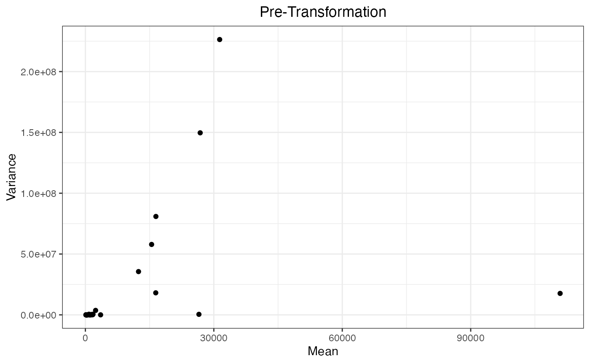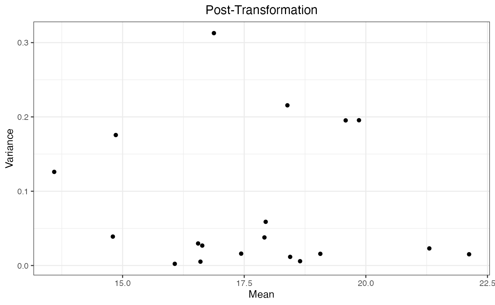
| R.Condition | R.FileName | R.Replicate | RAB3D_HUMAN | ADH1_YEAST | LYSC_CHICK | BGAL_HUMAN | SYTC_HUMAN | CYC_BOVIN | PA1B2_HUMAN | TEBP_HUMAN | UAP1_HUMAN | B3GLT_HUMAN | NFXL1_HUMAN | VPS36_HUMAN | T126B_HUMAN | XPO4_HUMAN | ORC3_HUMAN | BAG5_HUMAN | ANGL3_HUMAN | ZC11B_HUMAN | MAP11_HUMAN |
|---|---|---|---|---|---|---|---|---|---|---|---|---|---|---|---|---|---|---|---|---|---|
| 100fmol | 20230414_jcl_msDIAlogue_HeLa-6mix_100fmol_60min_DIA_Wat25cmBEH_1 | 1 | 16.68685 | 20.25893 | 20.01639 | 17.77434 | 21.20094 | 18.82649 | 17.46953 | 21.99844 | 18.39916 | 14.58320 | 16.07887 | 16.48738 | 13.70435 | 18.70169 | 16.43551 | 17.79841 | 14.97157 | NA | NA |
| 100fmol | 20230414_jcl_msDIAlogue_HeLa-6mix_100fmol_60min_DIA_Wat25cmBEH_2 | 2 | 16.57184 | 20.21888 | 20.01550 | 17.79824 | 21.19265 | 18.86651 | 17.41799 | 22.01232 | 18.37508 | 14.66280 | 16.08265 | 16.39482 | 13.19218 | 18.59392 | 16.42339 | 17.72967 | 14.95169 | NA | NA |
| 100fmol | 20230414_jcl_msDIAlogue_HeLa-6mix_100fmol_60min_DIA_Wat25cmBEH_3 | 3 | 16.49578 | 20.37810 | 20.00970 | 17.74101 | 21.16971 | 18.76881 | 17.47208 | 22.06394 | 18.31756 | 14.44418 | 16.12958 | 16.48643 | 13.31020 | NA | 16.44042 | 17.62873 | 15.08285 | 17.39655 | 18.90070 |
| 100fmol | 20230414_jcl_msDIAlogue_HeLa-6mix_100fmol_60min_DIA_Wat25cmBEH_4 | 4 | 16.62059 | 20.27705 | 20.01598 | 17.67858 | 21.18764 | 18.80707 | 17.33602 | 22.02670 | 18.34590 | 14.53416 | 16.03170 | 16.59599 | 13.75561 | NA | 16.41022 | 17.81518 | 14.85037 | 17.39695 | 18.95296 |
| 100fmol | 20230414_jcl_msDIAlogue_HeLa-6mix_100fmol_60min_DIA_Wat25cmBEH_5 | 5 | 16.59566 | 20.23536 | 19.96276 | 17.65893 | 21.14901 | 18.85385 | 17.40526 | 21.95543 | 18.34613 | 14.34904 | 16.01485 | 16.52160 | 13.69617 | NA | 16.34524 | 17.77694 | 14.52853 | 17.05548 | NA |
| 50fmol | 20230414_jcl_msDIAlogue_HeLa-6mix_50fmol_60min_DIA_Wat25cmBEH_1 | 1 | 16.46218 | 19.38908 | 19.19702 | 18.16243 | 21.45069 | 17.93870 | 17.53559 | 22.26172 | 18.48974 | 15.51065 | 16.01155 | 16.85196 | 13.06623 | NA | 16.80018 | 18.05619 | 14.59416 | 15.89587 | 19.15422 |
| 50fmol | 20230414_jcl_msDIAlogue_HeLa-6mix_50fmol_60min_DIA_Wat25cmBEH_2 | 2 | 16.66106 | 19.54470 | 19.14678 | 18.25496 | 21.55949 | 18.05573 | 17.68779 | 22.26483 | 18.65343 | 15.34978 | 16.14245 | 16.83424 | 13.96785 | NA | 16.78080 | 18.22009 | 14.87041 | NA | 19.20384 |
| 50fmol | 20230414_jcl_msDIAlogue_HeLa-6mix_50fmol_60min_DIA_Wat25cmBEH_3 | 3 | 16.64862 | 19.50293 | 19.16708 | 18.30158 | 21.50761 | 17.99735 | 17.49622 | 22.26617 | 18.56519 | 15.35803 | 16.12555 | 16.80165 | 14.19149 | NA | 16.76843 | 18.15563 | NA | 16.77494 | 19.20814 |
| 50fmol | 20230414_jcl_msDIAlogue_HeLa-6mix_50fmol_60min_DIA_Wat25cmBEH_4 | 4 | 16.63910 | 19.37445 | 19.15964 | 17.98465 | 21.30561 | 17.85207 | 17.30274 | 22.18561 | 18.46220 | 14.97419 | 16.06182 | 16.66201 | 13.35676 | NA | 16.57745 | 17.98380 | 14.56535 | 16.74032 | 18.98184 |
| 50fmol | 20230414_jcl_msDIAlogue_HeLa-6mix_50fmol_60min_DIA_Wat25cmBEH_5 | 5 | 16.61782 | 19.40820 | 19.16132 | 18.05653 | 21.32361 | 17.90887 | 17.24776 | 22.18529 | 18.48633 | 14.83420 | 16.04620 | 16.73720 | 13.70341 | NA | 16.53576 | 17.98874 | 14.78049 | NA | 19.04711 |
Filtering
In some cases, a researcher may wish to filter out a specific protein or proteins from the dataset. The most common instance of this would be proteins identified from the common contaminants database, where the identification is necessary to avoid incorrect matching but the result is irrelevant to the experimental question and would not be included in data visualization. Other scenarios might include a mixed-species experiment where the researcher wants to evaluate data from only one species at a time. This step allows you to set aside specific proteins from downstream analysis, using the gene_species identifier format.
NOTE: The proteins to be selected or removed is the
union of those specified in listName and those matching the
regular expression pattern in regexName.
KEEP IN MIND: Removal of any proteins, including common contaminants, will affect any global calculations performed after this step (such as normalization). This should not be done without a clear understanding of how this will affect your results.
Case 1. Remove proteins specified by the user in this step and keep everything else.
For example, the proteins named “ADH1_YEAST” and those containing “HUMAN” are chosen to be filtered out.
filterOutIn(dataTran, listName = "ADH1_YEAST", regexName = "HUMAN",
removeList = TRUE, saveRm = TRUE)where removeList = TRUE indicates the removal of
proteins from the union of listName and
regexName in dataTran. Please note that if
saveRm = TRUE, the excluded data (“ADH1_YEAS” + “*HUMAN”)
will be saved as a .csv file named filtered_out_data.csv in the
current working directory.
| R.Condition | R.FileName | R.Replicate | LYSC_CHICK | CYC_BOVIN |
|---|---|---|---|---|
| 100fmol | 20230414_jcl_msDIAlogue_HeLa-6mix_100fmol_60min_DIA_Wat25cmBEH_1 | 1 | 20.01639 | 18.82649 |
| 100fmol | 20230414_jcl_msDIAlogue_HeLa-6mix_100fmol_60min_DIA_Wat25cmBEH_2 | 2 | 20.01550 | 18.86651 |
| 100fmol | 20230414_jcl_msDIAlogue_HeLa-6mix_100fmol_60min_DIA_Wat25cmBEH_3 | 3 | 20.00970 | 18.76881 |
| 100fmol | 20230414_jcl_msDIAlogue_HeLa-6mix_100fmol_60min_DIA_Wat25cmBEH_4 | 4 | 20.01598 | 18.80707 |
| 100fmol | 20230414_jcl_msDIAlogue_HeLa-6mix_100fmol_60min_DIA_Wat25cmBEH_5 | 5 | 19.96276 | 18.85385 |
| 50fmol | 20230414_jcl_msDIAlogue_HeLa-6mix_50fmol_60min_DIA_Wat25cmBEH_1 | 1 | 19.19702 | 17.93870 |
| 50fmol | 20230414_jcl_msDIAlogue_HeLa-6mix_50fmol_60min_DIA_Wat25cmBEH_2 | 2 | 19.14678 | 18.05573 |
| 50fmol | 20230414_jcl_msDIAlogue_HeLa-6mix_50fmol_60min_DIA_Wat25cmBEH_3 | 3 | 19.16708 | 17.99735 |
| 50fmol | 20230414_jcl_msDIAlogue_HeLa-6mix_50fmol_60min_DIA_Wat25cmBEH_4 | 4 | 19.15964 | 17.85207 |
| 50fmol | 20230414_jcl_msDIAlogue_HeLa-6mix_50fmol_60min_DIA_Wat25cmBEH_5 | 5 | 19.16132 | 17.90887 |
Case 2. Keep the proteins specified by the user in this step and remove everything else.
Alternatively, if we would to keep proteins like “ADH1_YEAST” and
“*HUMAN”, simply set removelist = FALSE.
filterOutIn(dataTran, listName = "ADH1_YEAST", regexName = "HUMAN",
removeList = FALSE)| R.Condition | R.FileName | R.Replicate | RAB3D_HUMAN | ADH1_YEAST | BGAL_HUMAN | SYTC_HUMAN | PA1B2_HUMAN | TEBP_HUMAN | UAP1_HUMAN | B3GLT_HUMAN | NFXL1_HUMAN | VPS36_HUMAN | T126B_HUMAN | XPO4_HUMAN | ORC3_HUMAN | BAG5_HUMAN | ANGL3_HUMAN | ZC11B_HUMAN | MAP11_HUMAN |
|---|---|---|---|---|---|---|---|---|---|---|---|---|---|---|---|---|---|---|---|
| 100fmol | 20230414_jcl_msDIAlogue_HeLa-6mix_100fmol_60min_DIA_Wat25cmBEH_1 | 1 | 16.68685 | 20.25893 | 17.77434 | 21.20094 | 17.46953 | 21.99844 | 18.39916 | 14.58320 | 16.07887 | 16.48738 | 13.70435 | 18.70169 | 16.43551 | 17.79841 | 14.97157 | NA | NA |
| 100fmol | 20230414_jcl_msDIAlogue_HeLa-6mix_100fmol_60min_DIA_Wat25cmBEH_2 | 2 | 16.57184 | 20.21888 | 17.79824 | 21.19265 | 17.41799 | 22.01232 | 18.37508 | 14.66280 | 16.08265 | 16.39482 | 13.19218 | 18.59392 | 16.42339 | 17.72967 | 14.95169 | NA | NA |
| 100fmol | 20230414_jcl_msDIAlogue_HeLa-6mix_100fmol_60min_DIA_Wat25cmBEH_3 | 3 | 16.49578 | 20.37810 | 17.74101 | 21.16971 | 17.47208 | 22.06394 | 18.31756 | 14.44418 | 16.12958 | 16.48643 | 13.31020 | NA | 16.44042 | 17.62873 | 15.08285 | 17.39655 | 18.90070 |
| 100fmol | 20230414_jcl_msDIAlogue_HeLa-6mix_100fmol_60min_DIA_Wat25cmBEH_4 | 4 | 16.62059 | 20.27705 | 17.67858 | 21.18764 | 17.33602 | 22.02670 | 18.34590 | 14.53416 | 16.03170 | 16.59599 | 13.75561 | NA | 16.41022 | 17.81518 | 14.85037 | 17.39695 | 18.95296 |
| 100fmol | 20230414_jcl_msDIAlogue_HeLa-6mix_100fmol_60min_DIA_Wat25cmBEH_5 | 5 | 16.59566 | 20.23536 | 17.65893 | 21.14901 | 17.40526 | 21.95543 | 18.34613 | 14.34904 | 16.01485 | 16.52160 | 13.69617 | NA | 16.34524 | 17.77694 | 14.52853 | 17.05548 | NA |
| 50fmol | 20230414_jcl_msDIAlogue_HeLa-6mix_50fmol_60min_DIA_Wat25cmBEH_1 | 1 | 16.46218 | 19.38908 | 18.16243 | 21.45069 | 17.53559 | 22.26172 | 18.48974 | 15.51065 | 16.01155 | 16.85196 | 13.06623 | NA | 16.80018 | 18.05619 | 14.59416 | 15.89587 | 19.15422 |
| 50fmol | 20230414_jcl_msDIAlogue_HeLa-6mix_50fmol_60min_DIA_Wat25cmBEH_2 | 2 | 16.66106 | 19.54470 | 18.25496 | 21.55949 | 17.68779 | 22.26483 | 18.65343 | 15.34978 | 16.14245 | 16.83424 | 13.96785 | NA | 16.78080 | 18.22009 | 14.87041 | NA | 19.20384 |
| 50fmol | 20230414_jcl_msDIAlogue_HeLa-6mix_50fmol_60min_DIA_Wat25cmBEH_3 | 3 | 16.64862 | 19.50293 | 18.30158 | 21.50761 | 17.49622 | 22.26617 | 18.56519 | 15.35803 | 16.12555 | 16.80165 | 14.19149 | NA | 16.76843 | 18.15563 | NA | 16.77494 | 19.20814 |
| 50fmol | 20230414_jcl_msDIAlogue_HeLa-6mix_50fmol_60min_DIA_Wat25cmBEH_4 | 4 | 16.63910 | 19.37445 | 17.98465 | 21.30561 | 17.30274 | 22.18561 | 18.46220 | 14.97419 | 16.06182 | 16.66201 | 13.35676 | NA | 16.57745 | 17.98380 | 14.56535 | 16.74032 | 18.98184 |
| 50fmol | 20230414_jcl_msDIAlogue_HeLa-6mix_50fmol_60min_DIA_Wat25cmBEH_5 | 5 | 16.61782 | 19.40820 | 18.05653 | 21.32361 | 17.24776 | 22.18529 | 18.48633 | 14.83420 | 16.04620 | 16.73720 | 13.70341 | NA | 16.53576 | 17.98874 | 14.78049 | NA | 19.04711 |
Extension
Besides protein names, the function filterProtein()
provides a similar function to filter proteins by additional protein
information: gene, accession, and description.
filterProtein(dataTran, proteinInformation = "preprocess_protein_information.csv",
text = c("Ras-related protein Rab-3D", "Alcohol dehydrogenase 1"),
by = "description",
removeList = FALSE)where proteinInformation is the file name for protein
information, automatically generated by preprocessing(). In
this case, the proteins with descriptions “Ras-related protein Rab-3D”
or “Alcohol dehydrogenase 1” will be kept. Note that the search value
text is used for exact equality search.
| R.Condition | R.FileName | R.Replicate | RAB3D_HUMAN | ADH1_YEAST |
|---|---|---|---|---|
| 100fmol | 20230414_jcl_msDIAlogue_HeLa-6mix_100fmol_60min_DIA_Wat25cmBEH_1 | 1 | 16.68685 | 20.25893 |
| 100fmol | 20230414_jcl_msDIAlogue_HeLa-6mix_100fmol_60min_DIA_Wat25cmBEH_2 | 2 | 16.57184 | 20.21888 |
| 100fmol | 20230414_jcl_msDIAlogue_HeLa-6mix_100fmol_60min_DIA_Wat25cmBEH_3 | 3 | 16.49578 | 20.37810 |
| 100fmol | 20230414_jcl_msDIAlogue_HeLa-6mix_100fmol_60min_DIA_Wat25cmBEH_4 | 4 | 16.62059 | 20.27705 |
| 100fmol | 20230414_jcl_msDIAlogue_HeLa-6mix_100fmol_60min_DIA_Wat25cmBEH_5 | 5 | 16.59566 | 20.23536 |
| 50fmol | 20230414_jcl_msDIAlogue_HeLa-6mix_50fmol_60min_DIA_Wat25cmBEH_1 | 1 | 16.46218 | 19.38908 |
| 50fmol | 20230414_jcl_msDIAlogue_HeLa-6mix_50fmol_60min_DIA_Wat25cmBEH_2 | 2 | 16.66106 | 19.54470 |
| 50fmol | 20230414_jcl_msDIAlogue_HeLa-6mix_50fmol_60min_DIA_Wat25cmBEH_3 | 3 | 16.64862 | 19.50293 |
| 50fmol | 20230414_jcl_msDIAlogue_HeLa-6mix_50fmol_60min_DIA_Wat25cmBEH_4 | 4 | 16.63910 | 19.37445 |
| 50fmol | 20230414_jcl_msDIAlogue_HeLa-6mix_50fmol_60min_DIA_Wat25cmBEH_5 | 5 | 16.61782 | 19.40820 |
Normalization
Normalization is designed to address systematic biases in the data. Biases can arise from inadvertent sample grouping during generation or preparation, from variations in instrument performance during acquisition, analysis of different peptide amounts across experiments, or other reasons. These factors can artificially mask or enhance actual biological changes.
Many normalization methods have been developed for large datasets, each with its own strengths and weaknesses. The following factors should be considered when choosing a normalization method:
Experiment-Specific Normalization:
Most experiments run with UConn PMF are normalized by injection amount at the time of analysis to facilitate comparison. “Amount” is measured by UV absorbance at 280 nm, a standard method for generic protein quantification.Assumption of Non-Changing Species:
Most biological experiments implicitly assume that the majority of measured species in an experiment will not change across conditions. This assumption is more robust if there are thousands of species, compared to only hundreds, or tens, so for experiments of very different complexities (e.g. a purified protein vs. an immunoprecipitation vs. a full lysate), normalization should not be applied as a global process, but instead only on subsets of experiments that are relatively similar to each other.
So far, this package provides three normalization methods for use:
“quant”: Quantile (Bolstad et al. 2003) (values in each run are ranked, quantile bins are applied to the entire dataset, and values in each run adjusted to their closest bin value)
“median”: Protein-wise Median (a scalar factor is applied to each protein entry to make the median of each sample equal to every other sample)
“mean”: Protein-wise Mean (a scalar factor is applied to each protein entry to make the mean of each sample equal to every other sample)
Quantile normalization is generally recommended by UConn SCS.
dataNorm <- normalize(dataTran, normalizeType = "quant")
#> Warning: Removed 16 rows containing non-finite outside the scale range
#> (`stat_boxplot()`).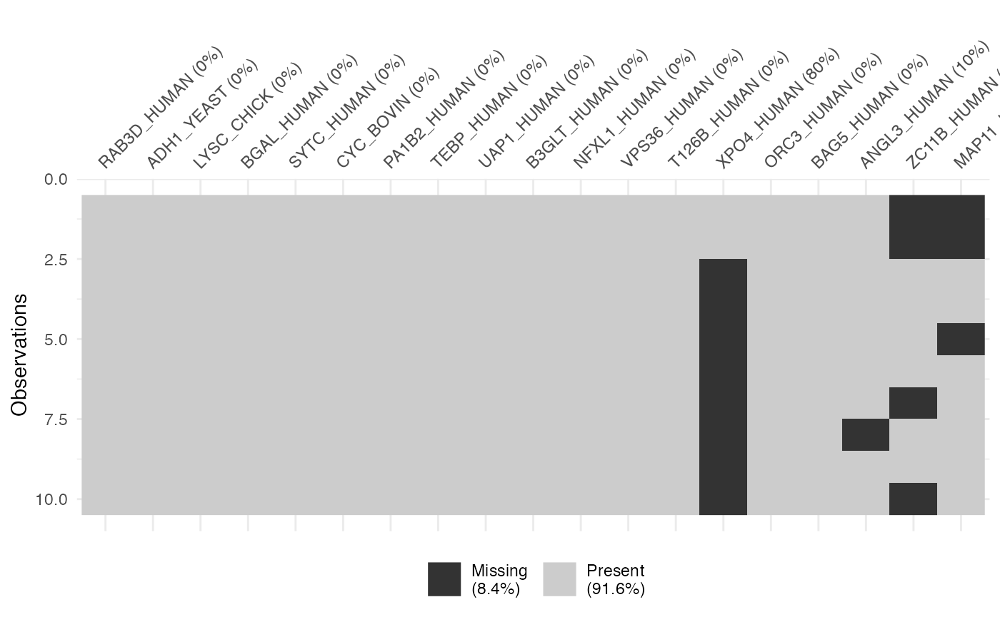
Oh! The message “Warning: Removed 16 rows containing non-finite values” indicates the presence of 16 NA (Not Available) values in the data. These NA values arise when a protein was not identified in a particular sample or condition and are automatically excluded when generating the boxplot but retained in the actual dataset.
| R.Condition | R.FileName | R.Replicate | RAB3D_HUMAN | ADH1_YEAST | LYSC_CHICK | BGAL_HUMAN | SYTC_HUMAN | CYC_BOVIN | PA1B2_HUMAN | TEBP_HUMAN | UAP1_HUMAN | B3GLT_HUMAN | NFXL1_HUMAN | VPS36_HUMAN | T126B_HUMAN | XPO4_HUMAN | ORC3_HUMAN | BAG5_HUMAN | ANGL3_HUMAN | ZC11B_HUMAN | MAP11_HUMAN |
|---|---|---|---|---|---|---|---|---|---|---|---|---|---|---|---|---|---|---|---|---|---|
| 100fmol | 20230414_jcl_msDIAlogue_HeLa-6mix_100fmol_60min_DIA_Wat25cmBEH_1 | 1 | 16.81611 | 20.00402 | 19.49314 | 17.72739 | 21.21903 | 18.98797 | 17.31263 | 22.12204 | 18.16677 | 14.63812 | 16.02729 | 16.59092 | 13.59442 | 18.53901 | 16.43331 | 17.91104 | 15.24429 | NA | NA |
| 100fmol | 20230414_jcl_msDIAlogue_HeLa-6mix_100fmol_60min_DIA_Wat25cmBEH_2 | 2 | 16.81611 | 20.00402 | 19.49314 | 17.91104 | 21.21903 | 18.98797 | 17.31263 | 22.12204 | 18.16677 | 14.63812 | 16.02729 | 16.43331 | 13.59442 | 18.53901 | 16.59092 | 17.72739 | 15.24429 | NA | NA |
| 100fmol | 20230414_jcl_msDIAlogue_HeLa-6mix_100fmol_60min_DIA_Wat25cmBEH_3 | 3 | 16.71547 | 20.06373 | 19.58448 | 18.00523 | 21.30239 | 18.66148 | 17.54057 | 22.12204 | 18.29036 | 14.60737 | 15.92981 | 16.55997 | 13.59442 | NA | 16.38081 | 17.81117 | 15.13860 | 17.08332 | 19.10318 |
| 100fmol | 20230414_jcl_msDIAlogue_HeLa-6mix_100fmol_60min_DIA_Wat25cmBEH_4 | 4 | 16.71547 | 20.06373 | 19.58448 | 17.81117 | 21.30239 | 18.66148 | 17.08332 | 22.12204 | 18.29036 | 14.60737 | 15.92981 | 16.55997 | 13.59442 | NA | 16.38081 | 18.00523 | 15.13860 | 17.54057 | 19.10318 |
| 100fmol | 20230414_jcl_msDIAlogue_HeLa-6mix_100fmol_60min_DIA_Wat25cmBEH_5 | 5 | 16.81611 | 20.00402 | 19.49314 | 17.91104 | 21.21903 | 18.98797 | 17.72739 | 22.12204 | 18.53901 | 14.63812 | 16.02729 | 16.59092 | 13.59442 | NA | 16.43331 | 18.16677 | 15.24429 | 17.31263 | NA |
| 50fmol | 20230414_jcl_msDIAlogue_HeLa-6mix_50fmol_60min_DIA_Wat25cmBEH_1 | 1 | 16.55997 | 20.06373 | 19.58448 | 18.29036 | 21.30239 | 17.81117 | 17.54057 | 22.12204 | 18.66148 | 15.13860 | 16.38081 | 17.08332 | 13.59442 | NA | 16.71547 | 18.00523 | 14.60737 | 15.92981 | 19.10318 |
| 50fmol | 20230414_jcl_msDIAlogue_HeLa-6mix_50fmol_60min_DIA_Wat25cmBEH_2 | 2 | 16.43331 | 20.00402 | 18.98797 | 18.16677 | 21.21903 | 17.72739 | 17.31263 | 22.12204 | 18.53901 | 15.24429 | 16.02729 | 16.81611 | 13.59442 | NA | 16.59092 | 17.91104 | 14.63812 | NA | 19.49314 |
| 50fmol | 20230414_jcl_msDIAlogue_HeLa-6mix_50fmol_60min_DIA_Wat25cmBEH_3 | 3 | 16.02729 | 20.00402 | 18.98797 | 18.16677 | 21.21903 | 17.72739 | 17.31263 | 22.12204 | 18.53901 | 14.63812 | 15.24429 | 16.81611 | 13.59442 | NA | 16.43331 | 17.91104 | NA | 16.59092 | 19.49314 |
| 50fmol | 20230414_jcl_msDIAlogue_HeLa-6mix_50fmol_60min_DIA_Wat25cmBEH_4 | 4 | 16.55997 | 20.06373 | 19.58448 | 18.29036 | 21.30239 | 17.81117 | 17.54057 | 22.12204 | 18.66148 | 15.13860 | 15.92981 | 16.71547 | 13.59442 | NA | 16.38081 | 18.00523 | 14.60737 | 17.08332 | 19.10318 |
| 50fmol | 20230414_jcl_msDIAlogue_HeLa-6mix_50fmol_60min_DIA_Wat25cmBEH_5 | 5 | 16.59092 | 20.00402 | 19.49314 | 18.16677 | 21.21903 | 17.72739 | 17.31263 | 22.12204 | 18.53901 | 15.24429 | 16.02729 | 16.81611 | 13.59442 | NA | 16.43331 | 17.91104 | 14.63812 | NA | 18.98797 |
Imputation
The two primary MS/MS acquisition types implemented in large scale MS-based proteomics have unique advantages and disadvantages. Traditional Data-Dependent Acquisition (DDA) methods favor specificity in MS/MS sampling over comprehensive proteome coverage. Small peptide isolation windows (<3 m/z) result in MS/MS spectra that contain fragmentation data from ideally only one peptide. This specificity promotes clear peptide identifications but comes at the expense of added scan time. In DDA experiments, the number of peptides that can be selected for MS/MS is limited by instrument scan speeds and is therefore prioritized by highest peptide abundance. Low abundance peptides are sampled less frequently for MS/MS and this can result in variable peptide coverage and many missing protein data across large sample datasets.
Data-Independent Acquisition (DIA) methods promote comprehensive peptide coverage over specificity by sampling many peptides for MS/MS simultaneously. Sequential and large mass isolation windows (4-50 m/z) are used to isolate large numbers of peptides at once for concurrent MS/MS. This produces complicated fragmentation spectra, but these spectra contain data on every observable peptide. A major disadvantage with this type of acquisition is that DIA MS/MS spectra are incredibly complex and difficult to deconvolve. Powerful and relatively new software programs like Spectronaut are capable of successfully parsing out which fragment ions came from each co-fragmented peptide using custom libraries, machine learning algorithms, and precisely determined retention times or measured ion mobility data. Because all observable ions are sampled for MS/MS, DIA reduces missingness substantially compared to DDA, though not entirely.
Function dataMissing() is designed to summarize the
missingness for each protein, where plot = TRUE indicates
plotting the missingness, and show_labels = TRUE means that
the protein names are displayed in the printed plot. Note that the
visual representation is not generated by default, and the plot
generation time varies with project size.
dataMissing <- dataMissing(dataNorm, plot = TRUE, show_labels = TRUE)The percentage in the protein labels represents the proportion of
missing data in the samples for that protein. For instance, the label
“XPO4_HUMAN (80%)” indicates that, within all observations for the
protein “XPO4_HUMAN”, 80% of the data is missing. Additionally, the
percentage in the legend represents the proportion of missing data in
the whole dataset. In this case, 8.4% of the data in
dataNorm is missing.
Regardless of plot generation, the function
dataMissing() always returns a table providing the
following information:
count_miss: The count of missing values for each protein.pct-miss: The percentage of missing values for each protein.pct_total_miss: The percentage of missing values for each protein relative to the total missing values in the entire dataset.
| RAB3D_HUMAN | ADH1_YEAST | LYSC_CHICK | BGAL_HUMAN | SYTC_HUMAN | CYC_BOVIN | PA1B2_HUMAN | TEBP_HUMAN | UAP1_HUMAN | B3GLT_HUMAN | NFXL1_HUMAN | VPS36_HUMAN | T126B_HUMAN | XPO4_HUMAN | ORC3_HUMAN | BAG5_HUMAN | ANGL3_HUMAN | ZC11B_HUMAN | MAP11_HUMAN | |
|---|---|---|---|---|---|---|---|---|---|---|---|---|---|---|---|---|---|---|---|
| count_miss | 0 | 0 | 0 | 0 | 0 | 0 | 0 | 0 | 0 | 0 | 0 | 0 | 0 | 8 | 0 | 0 | 1.00 | 4 | 3.00 |
| pct_miss | 0 | 0 | 0 | 0 | 0 | 0 | 0 | 0 | 0 | 0 | 0 | 0 | 0 | 80 | 0 | 0 | 10.00 | 40 | 30.00 |
| pct_total_miss | 0 | 0 | 0 | 0 | 0 | 0 | 0 | 0 | 0 | 0 | 0 | 0 | 0 | 50 | 0 | 0 | 6.25 | 25 | 18.75 |
For example, in the case of the protein “XPO4_HUMAN,” there are 8 NA values in the samples, representing 80% of the missing data for “XPO4_HUMAN” within that sample and 50% of the total missing data in the entire dataset.
Various imputation methods have been developed to address the missing-value issue and assign a reasonable guess of quantitative value to proteins with missing values. So far, this package provides 10 imputation methods for use:
impute.min_local(): Replaces missing values with the lowest measured value for that protein in that condition.impute.min_global(): Replaces missing values with the lowest measured value from any protein found within the entire dataset.impute.knn(): Replaces missing values using the k-nearest neighbors algorithm (Troyanskaya et al. 2001).impute.knn_seq(): Replaces missing values using the sequential k-nearest neighbors algorithm (Kim, Kim, and Yi 2004).impute.knn_trunc(): Replaces missing values using the truncated k-nearest neighbors algorithm (Shah et al. 2017).impute.nuc_norm(): Replaces missing values using the nuclear-norm regularization (Hastie et al. 2015).impute.mice_cart(): Replaces missing values using the classification and regression trees (Breiman et al. 1984; Doove, van Buuren, and Dusseldorp 2014; van Buuren 2018).impute.mice_norm(): Replaces missing values using the Bayesian linear regression (Rubin 1987; Schafer 1997; van Buuren and Groothuis-Oudshoorn 2011).impute.pca_bayes(): Replaces missing values using the Bayesian principal components analysis (Oba et al. 2003).impute.pca_prob(): Replaces missing values using the probabilistic principal components analysis (Stacklies et al. 2007).
Additional methods will be added later.
For example, to impute the NA value of dataNorm using
impute.min_local(), set the required percentage of values
that must be present in a given protein by condition combination for
values to be imputed to 51%.
NOTE: There is no rule in the field of proteomics
for filtering based on percentage of missingness, similar to there being
no rule for the number of replicates required to draw a conclusion.
However, reproducible observations make conclusions more credible.
Setting the reqPercentPresent to 0.51 requires that any
protein be observed in a majority of the replicates by condition in
order to be considered. For 3 replicates, this would require 2
measurements to allow imputation of the 3rd value. If only 1 measurement
is seen, the other values will remain NA, and will be filtered out in a
subsequent step.
dataImput <- impute.min_local(dataNorm, reportImputing = FALSE,
reqPercentPresent = 0.51)| R.Condition | R.FileName | R.Replicate | RAB3D_HUMAN | ADH1_YEAST | LYSC_CHICK | BGAL_HUMAN | SYTC_HUMAN | CYC_BOVIN | PA1B2_HUMAN | TEBP_HUMAN | UAP1_HUMAN | B3GLT_HUMAN | NFXL1_HUMAN | VPS36_HUMAN | T126B_HUMAN | XPO4_HUMAN | ORC3_HUMAN | BAG5_HUMAN | ANGL3_HUMAN | ZC11B_HUMAN | MAP11_HUMAN |
|---|---|---|---|---|---|---|---|---|---|---|---|---|---|---|---|---|---|---|---|---|---|
| 100fmol | 20230414_jcl_msDIAlogue_HeLa-6mix_100fmol_60min_DIA_Wat25cmBEH_1 | 1 | 16.81611 | 20.00402 | 19.49314 | 17.72739 | 21.21903 | 18.98797 | 17.31263 | 22.12204 | 18.16677 | 14.63812 | 16.02729 | 16.59092 | 13.59442 | 18.53901 | 16.43331 | 17.91104 | 15.24429 | 17.08332 | NA |
| 100fmol | 20230414_jcl_msDIAlogue_HeLa-6mix_100fmol_60min_DIA_Wat25cmBEH_2 | 2 | 16.81611 | 20.00402 | 19.49314 | 17.91104 | 21.21903 | 18.98797 | 17.31263 | 22.12204 | 18.16677 | 14.63812 | 16.02729 | 16.43331 | 13.59442 | 18.53901 | 16.59092 | 17.72739 | 15.24429 | 17.08332 | NA |
| 100fmol | 20230414_jcl_msDIAlogue_HeLa-6mix_100fmol_60min_DIA_Wat25cmBEH_3 | 3 | 16.71547 | 20.06373 | 19.58448 | 18.00523 | 21.30239 | 18.66148 | 17.54057 | 22.12204 | 18.29036 | 14.60737 | 15.92981 | 16.55997 | 13.59442 | NA | 16.38081 | 17.81117 | 15.13860 | 17.08332 | 19.10318 |
| 100fmol | 20230414_jcl_msDIAlogue_HeLa-6mix_100fmol_60min_DIA_Wat25cmBEH_4 | 4 | 16.71547 | 20.06373 | 19.58448 | 17.81117 | 21.30239 | 18.66148 | 17.08332 | 22.12204 | 18.29036 | 14.60737 | 15.92981 | 16.55997 | 13.59442 | NA | 16.38081 | 18.00523 | 15.13860 | 17.54057 | 19.10318 |
| 100fmol | 20230414_jcl_msDIAlogue_HeLa-6mix_100fmol_60min_DIA_Wat25cmBEH_5 | 5 | 16.81611 | 20.00402 | 19.49314 | 17.91104 | 21.21903 | 18.98797 | 17.72739 | 22.12204 | 18.53901 | 14.63812 | 16.02729 | 16.59092 | 13.59442 | NA | 16.43331 | 18.16677 | 15.24429 | 17.31263 | NA |
| 50fmol | 20230414_jcl_msDIAlogue_HeLa-6mix_50fmol_60min_DIA_Wat25cmBEH_1 | 1 | 16.55997 | 20.06373 | 19.58448 | 18.29036 | 21.30239 | 17.81117 | 17.54057 | 22.12204 | 18.66148 | 15.13860 | 16.38081 | 17.08332 | 13.59442 | NA | 16.71547 | 18.00523 | 14.60737 | 15.92981 | 19.10318 |
| 50fmol | 20230414_jcl_msDIAlogue_HeLa-6mix_50fmol_60min_DIA_Wat25cmBEH_2 | 2 | 16.43331 | 20.00402 | 18.98797 | 18.16677 | 21.21903 | 17.72739 | 17.31263 | 22.12204 | 18.53901 | 15.24429 | 16.02729 | 16.81611 | 13.59442 | NA | 16.59092 | 17.91104 | 14.63812 | 15.92981 | 19.49314 |
| 50fmol | 20230414_jcl_msDIAlogue_HeLa-6mix_50fmol_60min_DIA_Wat25cmBEH_3 | 3 | 16.02729 | 20.00402 | 18.98797 | 18.16677 | 21.21903 | 17.72739 | 17.31263 | 22.12204 | 18.53901 | 14.63812 | 15.24429 | 16.81611 | 13.59442 | NA | 16.43331 | 17.91104 | 14.60737 | 16.59092 | 19.49314 |
| 50fmol | 20230414_jcl_msDIAlogue_HeLa-6mix_50fmol_60min_DIA_Wat25cmBEH_4 | 4 | 16.55997 | 20.06373 | 19.58448 | 18.29036 | 21.30239 | 17.81117 | 17.54057 | 22.12204 | 18.66148 | 15.13860 | 15.92981 | 16.71547 | 13.59442 | NA | 16.38081 | 18.00523 | 14.60737 | 17.08332 | 19.10318 |
| 50fmol | 20230414_jcl_msDIAlogue_HeLa-6mix_50fmol_60min_DIA_Wat25cmBEH_5 | 5 | 16.59092 | 20.00402 | 19.49314 | 18.16677 | 21.21903 | 17.72739 | 17.31263 | 22.12204 | 18.53901 | 15.24429 | 16.02729 | 16.81611 | 13.59442 | NA | 16.43331 | 17.91104 | 14.63812 | 15.92981 | 18.98797 |
If reportImputing = TRUE, the returned result structure
will be altered to a list, adding a shadow data frame with imputed data
labels, where 1 indicates the corresponding entries have been imputed,
and 0 indicates otherwise.
After the above imputation, any entries that did not pass the percent present threshold will still have NA values and will need to be filtered out.
dataImput <- filterNA(dataImput, saveRm = TRUE)where saveRm = TRUE indicates that the filtered data
will be saved as a .csv file named filtered_NA_data.csv in the
current working directory.
The dataImput is as follows:
| R.Condition | R.FileName | R.Replicate | RAB3D_HUMAN | ADH1_YEAST | LYSC_CHICK | BGAL_HUMAN | SYTC_HUMAN | CYC_BOVIN | PA1B2_HUMAN | TEBP_HUMAN | UAP1_HUMAN | B3GLT_HUMAN | NFXL1_HUMAN | VPS36_HUMAN | T126B_HUMAN | ORC3_HUMAN | BAG5_HUMAN | ANGL3_HUMAN | ZC11B_HUMAN |
|---|---|---|---|---|---|---|---|---|---|---|---|---|---|---|---|---|---|---|---|
| 100fmol | 20230414_jcl_msDIAlogue_HeLa-6mix_100fmol_60min_DIA_Wat25cmBEH_1 | 1 | 16.81611 | 20.00402 | 19.49314 | 17.72739 | 21.21903 | 18.98797 | 17.31263 | 22.12204 | 18.16677 | 14.63812 | 16.02729 | 16.59092 | 13.59442 | 16.43331 | 17.91104 | 15.24429 | 17.08332 |
| 100fmol | 20230414_jcl_msDIAlogue_HeLa-6mix_100fmol_60min_DIA_Wat25cmBEH_2 | 2 | 16.81611 | 20.00402 | 19.49314 | 17.91104 | 21.21903 | 18.98797 | 17.31263 | 22.12204 | 18.16677 | 14.63812 | 16.02729 | 16.43331 | 13.59442 | 16.59092 | 17.72739 | 15.24429 | 17.08332 |
| 100fmol | 20230414_jcl_msDIAlogue_HeLa-6mix_100fmol_60min_DIA_Wat25cmBEH_3 | 3 | 16.71547 | 20.06373 | 19.58448 | 18.00523 | 21.30239 | 18.66148 | 17.54057 | 22.12204 | 18.29036 | 14.60737 | 15.92981 | 16.55997 | 13.59442 | 16.38081 | 17.81117 | 15.13860 | 17.08332 |
| 100fmol | 20230414_jcl_msDIAlogue_HeLa-6mix_100fmol_60min_DIA_Wat25cmBEH_4 | 4 | 16.71547 | 20.06373 | 19.58448 | 17.81117 | 21.30239 | 18.66148 | 17.08332 | 22.12204 | 18.29036 | 14.60737 | 15.92981 | 16.55997 | 13.59442 | 16.38081 | 18.00523 | 15.13860 | 17.54057 |
| 100fmol | 20230414_jcl_msDIAlogue_HeLa-6mix_100fmol_60min_DIA_Wat25cmBEH_5 | 5 | 16.81611 | 20.00402 | 19.49314 | 17.91104 | 21.21903 | 18.98797 | 17.72739 | 22.12204 | 18.53901 | 14.63812 | 16.02729 | 16.59092 | 13.59442 | 16.43331 | 18.16677 | 15.24429 | 17.31263 |
| 50fmol | 20230414_jcl_msDIAlogue_HeLa-6mix_50fmol_60min_DIA_Wat25cmBEH_1 | 1 | 16.55997 | 20.06373 | 19.58448 | 18.29036 | 21.30239 | 17.81117 | 17.54057 | 22.12204 | 18.66148 | 15.13860 | 16.38081 | 17.08332 | 13.59442 | 16.71547 | 18.00523 | 14.60737 | 15.92981 |
| 50fmol | 20230414_jcl_msDIAlogue_HeLa-6mix_50fmol_60min_DIA_Wat25cmBEH_2 | 2 | 16.43331 | 20.00402 | 18.98797 | 18.16677 | 21.21903 | 17.72739 | 17.31263 | 22.12204 | 18.53901 | 15.24429 | 16.02729 | 16.81611 | 13.59442 | 16.59092 | 17.91104 | 14.63812 | 15.92981 |
| 50fmol | 20230414_jcl_msDIAlogue_HeLa-6mix_50fmol_60min_DIA_Wat25cmBEH_3 | 3 | 16.02729 | 20.00402 | 18.98797 | 18.16677 | 21.21903 | 17.72739 | 17.31263 | 22.12204 | 18.53901 | 14.63812 | 15.24429 | 16.81611 | 13.59442 | 16.43331 | 17.91104 | 14.60737 | 16.59092 |
| 50fmol | 20230414_jcl_msDIAlogue_HeLa-6mix_50fmol_60min_DIA_Wat25cmBEH_4 | 4 | 16.55997 | 20.06373 | 19.58448 | 18.29036 | 21.30239 | 17.81117 | 17.54057 | 22.12204 | 18.66148 | 15.13860 | 15.92981 | 16.71547 | 13.59442 | 16.38081 | 18.00523 | 14.60737 | 17.08332 |
| 50fmol | 20230414_jcl_msDIAlogue_HeLa-6mix_50fmol_60min_DIA_Wat25cmBEH_5 | 5 | 16.59092 | 20.00402 | 19.49314 | 18.16677 | 21.21903 | 17.72739 | 17.31263 | 22.12204 | 18.53901 | 15.24429 | 16.02729 | 16.81611 | 13.59442 | 16.43331 | 17.91104 | 14.63812 | 15.92981 |
Summarization
This summarization provides a table of values for each protein in the final dataset that include the final processed abundances and fold changes in each condition, and that protein’s statistical relation to the global dataset in terms of its mean, median, standard deviation, and other parameters.
dataSumm <- summarize(dataImput, saveSumm = TRUE)| Condition | Stat | RAB3D_HUMAN | ADH1_YEAST | LYSC_CHICK | BGAL_HUMAN | SYTC_HUMAN | CYC_BOVIN | PA1B2_HUMAN | TEBP_HUMAN | UAP1_HUMAN | B3GLT_HUMAN | NFXL1_HUMAN | VPS36_HUMAN | T126B_HUMAN | ORC3_HUMAN | BAG5_HUMAN | ANGL3_HUMAN | ZC11B_HUMAN |
|---|---|---|---|---|---|---|---|---|---|---|---|---|---|---|---|---|---|---|
| 100fmol | n | 5.0000000 | 5.0000000 | 5.0000000 | 5.0000000 | 5.0000000 | 5.0000000 | 5.0000000 | 5.00000 | 5.0000000 | 5.0000000 | 5.0000000 | 5.0000000 | 5.00000 | 5.0000000 | 5.0000000 | 5.0000000 | 5.0000000 |
| 100fmol | mean | 16.7758540 | 20.0279072 | 19.5296768 | 17.8731761 | 21.2523732 | 18.8573750 | 17.3953072 | 22.12204 | 18.2906540 | 14.6258172 | 15.9882985 | 16.5470182 | 13.59442 | 16.4438325 | 17.9243208 | 15.2020139 | 17.2206289 |
| 100fmol | sd | 0.0551255 | 0.0327043 | 0.0500279 | 0.1065418 | 0.0456588 | 0.1788241 | 0.2461674 | 0.00000 | 0.1519689 | 0.0168409 | 0.0533895 | 0.0654245 | 0.00000 | 0.0863134 | 0.1710908 | 0.0578860 | 0.2045679 |
| 100fmol | median | 16.8161120 | 20.0040234 | 19.4931415 | 17.9110449 | 21.2190287 | 18.9879697 | 17.3126283 | 22.12204 | 18.2903590 | 14.6381160 | 16.0272887 | 16.5599694 | 13.59442 | 16.4333052 | 17.9110449 | 15.2442878 | 17.0833151 |
| 100fmol | trimmed | 16.7758540 | 20.0279072 | 19.5296768 | 17.8731761 | 21.2523732 | 18.8573750 | 17.3953072 | 22.12204 | 18.2906540 | 14.6258172 | 15.9882985 | 16.5470182 | 13.59442 | 16.4438325 | 17.9243208 | 15.2020139 | 17.2206289 |
| 100fmol | mad | 0.0000000 | 0.0000000 | 0.0000000 | 0.1396408 | 0.0000000 | 0.0000000 | 0.3379478 | 0.00000 | 0.1832349 | 0.0000000 | 0.0000000 | 0.0458926 | 0.00000 | 0.0778229 | 0.1480813 | 0.0000000 | 0.0000000 |
| 100fmol | min | 16.7154670 | 20.0040234 | 19.4931415 | 17.7273935 | 21.2190287 | 18.6614830 | 17.0833151 | 22.12204 | 18.1667688 | 14.6073689 | 15.9298133 | 16.4333052 | 13.59442 | 16.3808143 | 17.7273935 | 15.1386030 | 17.0833151 |
| 100fmol | max | 16.8161120 | 20.0637329 | 19.5844796 | 18.0052314 | 21.3023900 | 18.9879697 | 17.7273935 | 22.12204 | 18.5390145 | 14.6381160 | 16.0272887 | 16.5909235 | 13.59442 | 16.5909235 | 18.1667688 | 15.2442878 | 17.5405709 |
| 100fmol | range | 0.1006450 | 0.0597096 | 0.0913381 | 0.2778380 | 0.0833612 | 0.3264867 | 0.6440784 | 0.00000 | 0.3722458 | 0.0307471 | 0.0974754 | 0.1576183 | 0.00000 | 0.2101091 | 0.4393753 | 0.1056848 | 0.4572559 |
| 100fmol | skew | -0.2921187 | 0.2921187 | 0.2921187 | -0.1530099 | 0.2921187 | -0.2921187 | 0.1097890 | NaN | 0.6563002 | -0.2921187 | -0.2921187 | -0.9261273 | NaN | 0.8334126 | 0.2273441 | -0.2921187 | 0.6018551 |
| 100fmol | kurtosis | -2.2533333 | -2.2533333 | -2.2533333 | -1.7975401 | -2.2533333 | -2.2533333 | -1.7922330 | NaN | -1.3966206 | -2.2533333 | -2.2533333 | -1.0930665 | NaN | -1.1994567 | -1.7942036 | -2.2533333 | -1.6733699 |
| 100fmol | se | 0.0246529 | 0.0146258 | 0.0223732 | 0.0476469 | 0.0204192 | 0.0799726 | 0.1100894 | 0.00000 | 0.0679626 | 0.0075315 | 0.0238765 | 0.0292587 | 0.00000 | 0.0386005 | 0.0765141 | 0.0258874 | 0.0914855 |
| 50fmol | n | 5.0000000 | 5.0000000 | 5.0000000 | 5.0000000 | 5.0000000 | 5.0000000 | 5.0000000 | 5.00000 | 5.0000000 | 5.0000000 | 5.0000000 | 5.0000000 | 5.00000 | 5.0000000 | 5.0000000 | 5.0000000 | 5.0000000 |
| 50fmol | mean | 16.4342912 | 20.0279072 | 19.3276080 | 18.2162049 | 21.2523732 | 17.7609023 | 17.4038053 | 22.12204 | 18.5880019 | 15.0807795 | 15.9218986 | 16.8494236 | 13.59442 | 16.5107630 | 17.9487195 | 14.6196677 | 16.2927357 |
| 50fmol | sd | 0.2354653 | 0.0327043 | 0.3122802 | 0.0676932 | 0.0456588 | 0.0458838 | 0.1248493 | 0.00000 | 0.0670787 | 0.2530356 | 0.4159438 | 0.1378210 | 0.00000 | 0.1389384 | 0.0515880 | 0.0168409 | 0.5265619 |
| 50fmol | median | 16.5599694 | 20.0040234 | 19.4931415 | 18.1667688 | 21.2190287 | 17.7273935 | 17.3126283 | 22.12204 | 18.5390145 | 15.1386030 | 16.0272887 | 16.8161120 | 13.59442 | 16.4333052 | 17.9110449 | 14.6073689 | 15.9298133 |
| 50fmol | trimmed | 16.4342912 | 20.0279072 | 19.3276080 | 18.2162049 | 21.2523732 | 17.7609023 | 17.4038053 | 22.12204 | 18.5880019 | 15.0807795 | 15.9218986 | 16.8494236 | 13.59442 | 16.5107630 | 17.9487195 | 14.6196677 | 16.2927357 |
| 50fmol | mad | 0.0458926 | 0.0000000 | 0.1354179 | 0.0000000 | 0.0000000 | 0.0000000 | 0.0000000 | 0.00000 | 0.0000000 | 0.1566883 | 0.1445171 | 0.0000000 | 0.00000 | 0.0778229 | 0.0000000 | 0.0000000 | 0.0000000 |
| 50fmol | min | 16.0272887 | 20.0040234 | 18.9879697 | 18.1667688 | 21.2190287 | 17.7273935 | 17.3126283 | 22.12204 | 18.5390145 | 14.6381160 | 15.2442878 | 16.7154670 | 13.59442 | 16.3808143 | 17.9110449 | 14.6073689 | 15.9298133 |
| 50fmol | max | 16.5909235 | 20.0637329 | 19.5844796 | 18.2903590 | 21.3023900 | 17.8111655 | 17.5405709 | 22.12204 | 18.6614830 | 15.2442878 | 16.3808143 | 17.0833151 | 13.59442 | 16.7154670 | 18.0052314 | 14.6381160 | 17.0833151 |
| 50fmol | range | 0.5636348 | 0.0597096 | 0.5965099 | 0.1235902 | 0.0833612 | 0.0837721 | 0.2279426 | 0.00000 | 0.1224684 | 0.6061718 | 1.1365265 | 0.3678480 | 0.00000 | 0.3346527 | 0.0941865 | 0.0307471 | 1.1535018 |
| 50fmol | skew | -0.9131660 | 0.2921187 | -0.2621938 | 0.2921187 | 0.2921187 | 0.2921187 | 0.2921187 | NaN | 0.2921187 | -0.9580937 | -0.5895834 | 0.7854057 | NaN | 0.4451142 | 0.2921187 | 0.2921187 | 0.5167641 |
| 50fmol | kurtosis | -1.1430792 | -2.2533333 | -2.2413934 | -2.2533333 | -2.2533333 | -2.2533333 | -2.2533333 | NaN | -2.2533333 | -1.0559053 | -1.2933074 | -1.1605394 | NaN | -1.8437283 | -2.2533333 | -2.2533333 | -1.8277532 |
| 50fmol | se | 0.1053033 | 0.0146258 | 0.1396560 | 0.0302733 | 0.0204192 | 0.0205199 | 0.0558343 | 0.00000 | 0.0299985 | 0.1131610 | 0.1860157 | 0.0616354 | 0.00000 | 0.0621351 | 0.0230709 | 0.0075315 | 0.2354856 |
| Fold Change | mean | -0.3415628 | 0.0000000 | -0.2020687 | 0.3430288 | 0.0000000 | -1.0964727 | 0.0084981 | 0.00000 | 0.2973479 | 0.4549624 | -0.0664000 | 0.3024055 | 0.00000 | 0.0669305 | 0.0243987 | -0.5823461 | -0.9278932 |
| Fold Change | sd | 0.1803398 | 0.0000000 | 0.2622523 | -0.0388486 | 0.0000000 | -0.1329403 | -0.1213181 | 0.00000 | -0.0848902 | 0.2361947 | 0.3625543 | 0.0723966 | 0.00000 | 0.0526250 | -0.1195028 | -0.0410451 | 0.3219940 |
| Fold Change | median | -0.2561427 | 0.0000000 | 0.0000000 | 0.2557238 | 0.0000000 | -1.2605762 | 0.0000000 | 0.00000 | 0.2486555 | 0.5004870 | 0.0000000 | 0.2561427 | 0.00000 | 0.0000000 | 0.0000000 | -0.6369189 | -1.1535018 |
| Fold Change | trimmed | -0.3415628 | 0.0000000 | -0.2020687 | 0.3430288 | 0.0000000 | -1.0964727 | 0.0084981 | 0.00000 | 0.2973479 | 0.4549624 | -0.0664000 | 0.3024055 | 0.00000 | 0.0669305 | 0.0243987 | -0.5823461 | -0.9278932 |
| Fold Change | mad | 0.0458926 | 0.0000000 | 0.1354179 | -0.1396408 | 0.0000000 | 0.0000000 | -0.3379478 | 0.00000 | -0.1832349 | 0.1566883 | 0.1445171 | -0.0458926 | 0.00000 | 0.0000000 | -0.1480813 | 0.0000000 | 0.0000000 |
| Fold Change | min | -0.6881783 | 0.0000000 | -0.5051718 | 0.4393753 | 0.0000000 | -0.9340895 | 0.2293132 | 0.00000 | 0.3722458 | 0.0307471 | -0.6855255 | 0.2821618 | 0.00000 | 0.0000000 | 0.1836515 | -0.5312341 | -1.1535018 |
| Fold Change | max | -0.2251885 | 0.0000000 | 0.0000000 | 0.2851276 | 0.0000000 | -1.1768042 | -0.1868225 | 0.00000 | 0.1224684 | 0.6061718 | 0.3535256 | 0.4923916 | 0.00000 | 0.1245435 | -0.1615374 | -0.6061718 | -0.4572559 |
| Fold Change | range | 0.4629898 | 0.0000000 | 0.5051718 | -0.1542477 | 0.0000000 | -0.2427147 | -0.4161357 | 0.00000 | -0.2497773 | 0.5754247 | 1.0390511 | 0.2102298 | 0.00000 | 0.1245435 | -0.3451889 | -0.0749377 | 0.6962459 |
| Fold Change | skew | -0.6210473 | 0.0000000 | -0.5543125 | 0.4451286 | 0.0000000 | 0.5842374 | 0.1823297 | NaN | -0.3641815 | -0.6659750 | -0.2974647 | 1.7115331 | NaN | -0.3882984 | 0.0647746 | 0.5842374 | -0.0850910 |
| Fold Change | kurtosis | 1.1102542 | 0.0000000 | 0.0119400 | -0.4557933 | 0.0000000 | 0.0000000 | -0.4611003 | NaN | -0.8567128 | 1.1974280 | 0.9600259 | -0.0674730 | NaN | -0.6442716 | -0.4591298 | 0.0000000 | -0.1543832 |
| Fold Change | se | 0.0806504 | 0.0000000 | 0.1172828 | -0.0173736 | 0.0000000 | -0.0594527 | -0.0542551 | 0.00000 | -0.0379641 | 0.1056295 | 0.1621392 | 0.0323767 | 0.00000 | 0.0235346 | -0.0534433 | -0.0183559 | 0.1440001 |
The column “Stat” in the generated result includes the following statistics:
- n: number.
- mean: mean.
- sd: standard deviation.
- median: median.
- trimmed: trimmed mean with a trim of 0.1.
- mad: median absolute deviation (from the median).
- min: minimum.
- max: maximum.
- range: the difference between the maximum and minimum value.
- skew: skewness.
- kurtosis: kurtosis.
- se: standard error.
Analysis
The function analyze() calculates the results that can
be used in subsequent visualizations. If more than two conditions exist
in the data, precisely two conditions for comparison must be specified
via the argument conditions.
cond <- c("50fmol", "100fmol")Student’s t-test
The Student’s t-test is used to compare the means between two conditions for each protein, reporting both the difference in means between the conditions (calculated as Condition 1 - Condition 2) and the P-value of the test.
anlys_t <- analyze(dataImput, conditions = cond, testType = "t-test")
#> Data are essentially constant.
#> Data are essentially constant.Oops! The warning message shows “Data are essentially constant,” which means that the data contain proteins with the same value in all samples. In this case, the P-value of t-test returns NA.
| RAB3D_HUMAN | ADH1_YEAST | LYSC_CHICK | BGAL_HUMAN | SYTC_HUMAN | CYC_BOVIN | PA1B2_HUMAN | TEBP_HUMAN | UAP1_HUMAN | B3GLT_HUMAN | NFXL1_HUMAN | VPS36_HUMAN | T126B_HUMAN | ORC3_HUMAN | BAG5_HUMAN | ANGL3_HUMAN | ZC11B_HUMAN | |
|---|---|---|---|---|---|---|---|---|---|---|---|---|---|---|---|---|---|
| Difference | -0.3415628 | 0 | -0.2020687 | 0.3430288 | 0 | -1.0964727 | 0.0084981 | 0 | 0.2973479 | 0.4549624 | -0.0664000 | 0.3024055 | 0 | 0.0669305 | 0.0243987 | -0.5823461 | -0.9278932 |
| P-value | 0.0296551 | 1 | 0.2229593 | 0.0005694 | 1 | 0.0000852 | 0.9473757 | NA | 0.0084762 | 0.0156987 | 0.7406309 | 0.0049582 | NA | 0.3919954 | 0.7731339 | 0.0000073 | 0.0135214 |
Moderated t-test
The main distinction between the Student’s and moderated t-tests (Smyth 2004) lies in how variance is computed. While the Student’s t-test calculates variance based on the data available for each protein individually, the moderated t-test utilizes information from all the chosen proteins to calculate variance.
anlys_mod.t <- analyze(dataImput, conditions = cond, testType = "mod.t-test")In the moderated t-test, a warning message might occur stating, “Zero sample variances detected, have been offset away from zero.” This warning corresponds to examples of proteins that exhibited identical quant values, either pre- or post-imputation, and therefore no variance is present across conditions for those proteins. This does not impede downstream analysis; it merely serves to alert users to its occurrence.
| RAB3D_HUMAN | ADH1_YEAST | LYSC_CHICK | BGAL_HUMAN | SYTC_HUMAN | CYC_BOVIN | PA1B2_HUMAN | TEBP_HUMAN | UAP1_HUMAN | B3GLT_HUMAN | NFXL1_HUMAN | VPS36_HUMAN | T126B_HUMAN | ORC3_HUMAN | BAG5_HUMAN | ANGL3_HUMAN | ZC11B_HUMAN | |
|---|---|---|---|---|---|---|---|---|---|---|---|---|---|---|---|---|---|
| Difference | -0.3415628 | 0 | -0.2020687 | 0.3430288 | 0 | -1.0964727 | 0.0084981 | 0 | 0.2973479 | 0.4549624 | -0.0664000 | 0.3024055 | 0 | 0.0669305 | 0.0243987 | -0.5823461 | -0.9278932 |
| P-value | 0.0106414 | 1 | 0.1765624 | 0.0001868 | 1 | 0.0000004 | 0.9450320 | 1 | 0.0028978 | 0.0028530 | 0.7238526 | 0.0015565 | 1 | 0.3715159 | 0.7605007 | 0.0000000 | 0.0047454 |
MA
The result of testType = "MA" is to generate the data
for plotting an MA plot, which represents the protein-wise averages
within each condition.
anlys_MA <- analyze(dataImput, conditions = cond, testType = "MA")| RAB3D_HUMAN | ADH1_YEAST | LYSC_CHICK | BGAL_HUMAN | SYTC_HUMAN | CYC_BOVIN | PA1B2_HUMAN | TEBP_HUMAN | UAP1_HUMAN | B3GLT_HUMAN | NFXL1_HUMAN | VPS36_HUMAN | T126B_HUMAN | ORC3_HUMAN | BAG5_HUMAN | ANGL3_HUMAN | ZC11B_HUMAN | |
|---|---|---|---|---|---|---|---|---|---|---|---|---|---|---|---|---|---|
| 100fmol | 16.77585 | 20.02791 | 19.52968 | 17.87318 | 21.25237 | 18.85738 | 17.39531 | 22.12204 | 18.29065 | 14.62582 | 15.9883 | 16.54702 | 13.59442 | 16.44383 | 17.92432 | 15.20201 | 17.22063 |
| 50fmol | 16.43429 | 20.02791 | 19.32761 | 18.21620 | 21.25237 | 17.76090 | 17.40381 | 22.12204 | 18.58800 | 15.08078 | 15.9219 | 16.84942 | 13.59442 | 16.51076 | 17.94872 | 14.61967 | 16.29274 |
Visualization
This section provides a variety of options for getting a global view of your data, making comparisons, and highlighting trends. Keep in mind that data visualization is most effective when illustrating a point or answering a question you have about your data, and not as a means to find a point/question.
heatmap
The package offers two options for plotting the heatmap.
- Option 1 utilizes the source package
pheatmap, capable of plotting the dendrogram simultaneously. It is the default choice for heatmaps in this package.
visualize(dataImput, graphType = "heatmap",
pkg = "pheatmap",
cluster_cols = TRUE, cluster_rows = FALSE,
show_colnames = TRUE, show_rownames = TRUE)When protein names are excessively long, it is recommended to set
show_rownames = FALSE to view the full heatmap.
- Option 2 use the source package
ggplot2to generate a ggplot object but does not include the dendrogram.
visualize(dataImput, graphType = "heatmap", pkg = "ggplot2")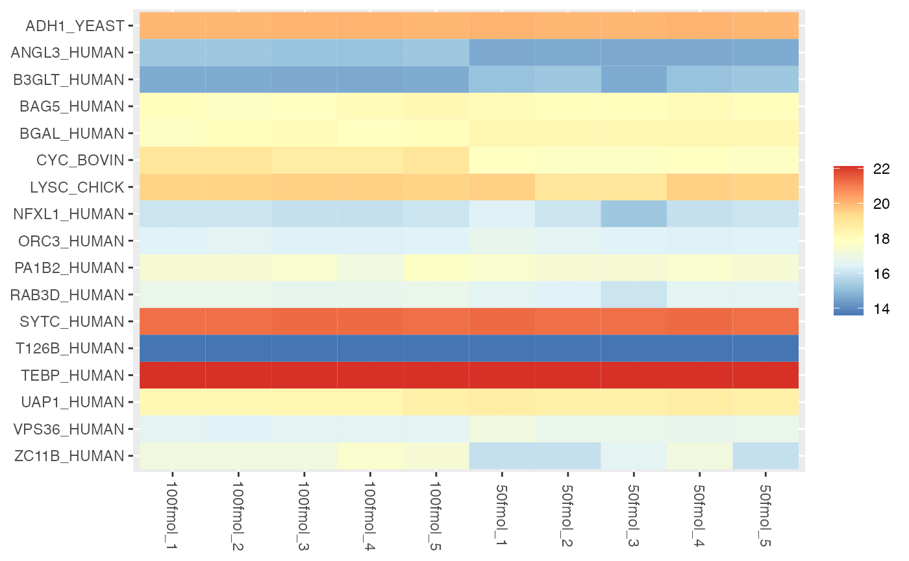
In a heatmap, similar colors within a row indicate relatively consistent values, suggesting similar protein expression levels across different samples.
MA
An MA plot, short for “M vs. A plot,” which uses two axes:
- M axis (vertical): Represents the logarithm (usually base 2) of the fold change, or the ratio of the expression levels, between two conditions. It is calculated as: \[M = log_2(X/Y) = log_2 X - log_2 Y\]
- A axis (horizontal): Represents the average intensity of the two conditions, calculated as: \[A = \frac{1}{2}log_2(XY) = \frac{1}{2}\left[log_2(X)+log_2(Y)\right]\]
Most proteins are expected to exhibit little variation, leading to the majority of points concentrating around the line M = 0 (indicating no difference between group means).
visualize(anlys_MA, graphType = "MA", M.thres = 1, transformLabel = "Log2")
#> Warning: Removed 16 rows containing missing values or values outside the scale range
#> (`geom_text_repel()`).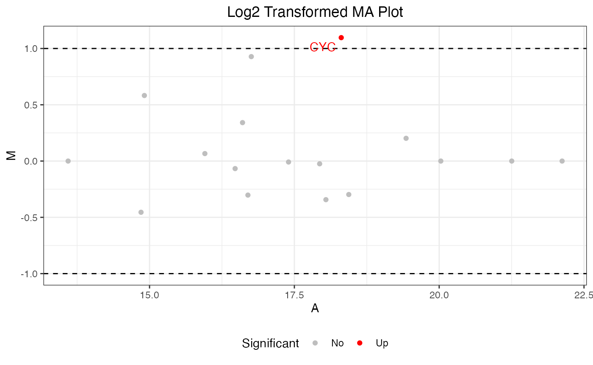
where M.thres = 1 means the M thresholds are set to −1
and 1. The scatters are split into three parts: significant up (M >
1), no significant (-1 \(\leq\) M \(\leq\) 1), and significant down (M <
-1). And transformLabel = "Log2" is used to label the
title. Additionally, the warning message “Removed 16 rows containing
missing values” indicates that there are 16 proteins with no
significance.
Normalize
visualize(dataNorm, graphType = "normalize")
#> Warning: Removed 16 rows containing non-finite outside the scale range
#> (`stat_boxplot()`).PCA
Principal component analysis (PCA) is a powerful technique used in data analysis to simplify and reduce the dimensionality of large datasets. It transforms original variables into uncorrelated components that capture the maximum variance. By selecting a subset of these components, PCA projects the data points onto these key directions, enabling visualization and analysis in a lower-dimensional space. This aids in identifying patterns and relationships within complex datasets.
In the visualization for graphType = "PCA_*", the
arguments center and scale are used to center
the data to zero mean and scale to unit variance, with default setting
at TRUE. The most common error message is “Cannot rescale a
constant/zero column to unit variance.” This clearly occurs when columns
representing proteins contain only zeros or have constant values.
Typically, there are two ways to address this error: one is to remove
these proteins, and the other is to set scale = FALSE.
NOTE: Data scaling is done to ensure that the scale differences between different features do not affect the results of PCA. If not scaled, features with larger scales will dominate the computation of principal components (PCs).
In the case of dataImput, two proteins, namely
“TEBP_HUMAN” and “T126B_HUMAN,” have constant values, leading to the
error message. We choose to remove these two proteins in PCA.
PCA_scree
One way to help identify how many PCs to retain, is to explore a scree plot. The scree plot shows the eigenvalues of each PC, which represent the proportion of variance explained by that component.
visualize(dataPCA, graphType = "PCA_scree", center = TRUE, scale = TRUE,
addlabels = TRUE, choice = "variance", ncp = 10)
visualize(dataPCA, graphType = "PCA_scree", center = TRUE, scale = TRUE,
addlabels = TRUE, choice = "eigenvalue", ncp = 10)where choice specifies the data to be plotted, either
"variance" or "eigenvalue",
addlabels = TRUE adds information labels at the top of
bars/points, and ncp = 10 sets the number of dimension to
be displayed.
PCA_ind
The primary PCA plot of individual data visually represents the distribution of individual observations in a reduced-dimensional space, typically defined by the PCs. The x and y axes of the PCA plot represent the PCs. Each axis corresponds to a linear combination of the original variables. Individual data points on the PCA plot represent observations (e.g., samples) from the original dataset. Points that are close to the origin (0, 0), are close to the “average” across all protein abundances. If sufficient samples are present, the plot will also produce a 95% confidence ellipse, as well as a centroid (mean for each group provided), for each groups (condition) provided.
visualize(dataPCA, graphType = "PCA_ind", center = TRUE, scale = TRUE,
addlabels = TRUE, addEllipses = TRUE, ellipse.level = 0.95)
PCA_var
This plot will be more useful if your analyses are based on a relatively small number of proteins. It represents the association, or loading of each protein on the first two PCs. Longer arrows represents stronger associations. It is important to note that proteins that are weakly associated with PC1 or PC2 may still be highly correlated with other PCs not being plotted. Consult the scree plot (and other available methods) to determine the appropriate number of PCs to investigate.
visualize(dataPCA, graphType = "PCA_var", center = TRUE, scale = TRUE,
addlabels = TRUE)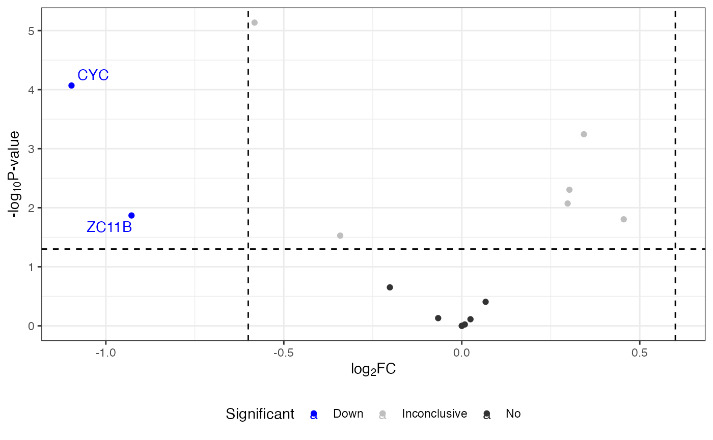
PCA_biplot
The PCA biplot includes individual and variable plots. Again, with a large number of proteins, this plot can be unwieldy.
visualize(dataPCA, graphType = "PCA_biplot", center = TRUE, scale = TRUE,
addEllipses = TRUE, ellipse.level = 0.95, label = "all")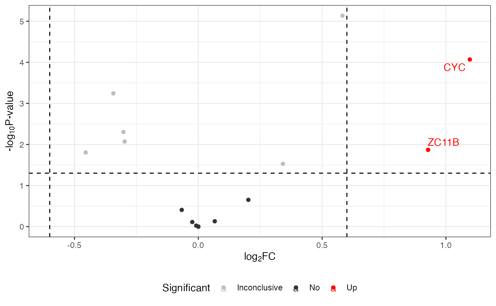
t-test
The function visualize() can be applied to any t-test
output. It generates two useful plots: a histogram of fold changes
across the analyzed proteins and a histogram of P-values. The majority
of proteins are expected to show very small change between conditions,
so the fold change histogram will have a peak at around zero. For the
P-values, most P-values are expected to be non-significant (above 0.05).
Depending on the strength of the treatment effect, there may be a peak
of p-values near 0.
visualize(anlys_mod.t, graphType = "t-test")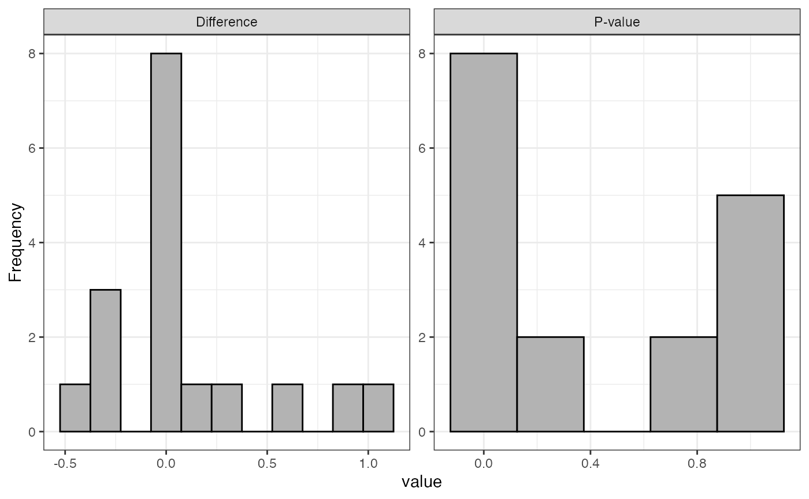
Upset
The upset plot is a visual representation that helps display the overlap and intersection of sets or categories in a dataset. It is particularly useful for illustrating the presence or absence of elements in combinations of sets.
dataSort <- sortcondition(dataSet)
visualize(dataSort, graphType = "Upset")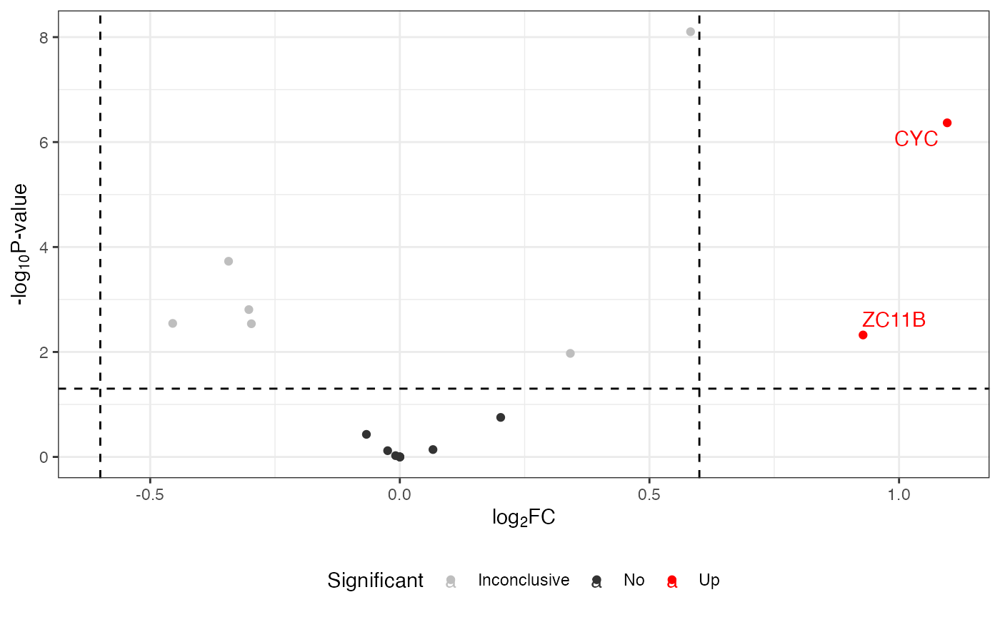
This plot reveals that 18 proteins are in common between 100fmol and 50fmol, while only 1 protein is unique to 100fmol.
Venn
The Venn plot is another graphical representation of the relationships between sets. Each circle represents a set, and the overlapping regions show the elements that are shared between sets.
visualize(dataSort, graphType = "Venn",
show_percentage = TRUE,
fill_color = c("blue", "yellow", "green", "red"),
show_universal = FALSE)
In the example above, 100fmol and 50fmol groups share 18 proteins. Notably, one protein is exclusively found in the 100fmol group, while the 50fmol group lacks any unique proteins.
Volcano
A volcano plot is a graphical representation commonly used in proteomics and genomics to visualize differential expression analysis results. It is particularly useful for identifying significant changes in extensive data. It displays two important pieces of information about differences between conditions in a dataset:
Statistical significance (vertical): Represents the negative log10 of the P-value.
Fold change (horizontal): Represents the fold change.
visualize(anlys_mod.t, graphType = "volcano",
P.thres = 0.05, logF.thres = 0.6)
#> Warning: Removed 15 rows containing missing values or values outside the scale range
#> (`geom_text_repel()`).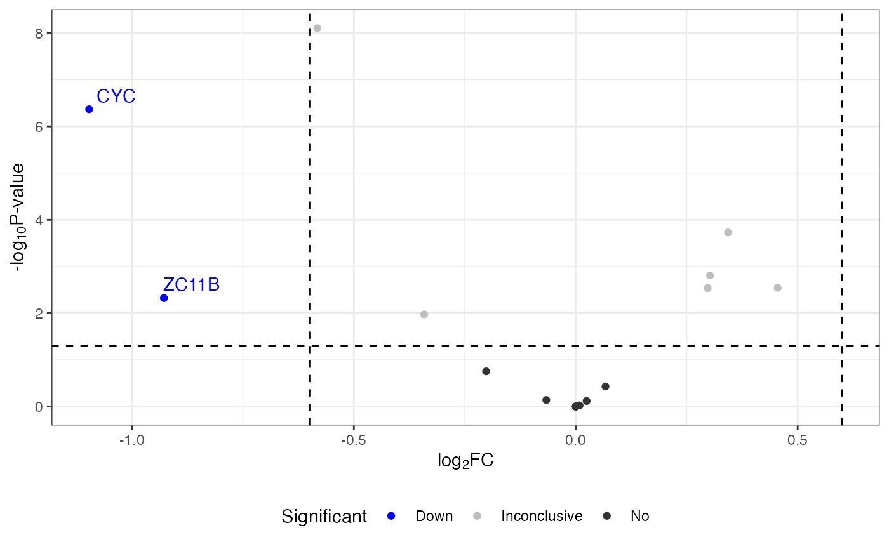
Other useful function
The function pullProteinPath() allows you to see the
values associated with a specific protein at each step of processing.
This can be useful for questions such as, “Were all of the values for my
favorite protein actually measured, or were some imputed?” or “Why
didn’t my favorite protein make it to the final list? Where was it
filtered out?”. It can also be used to check whether a given protein’s
fold-change might have been a processing artifact.
ZC11B <- pullProteinPath(proteinName = "ZC11B_HUMAN",
dataSetList = list(Initial = dataSet,
Transformed = dataTran,
Normalized = dataNorm,
Imputed = dataImput))| R.Condition | R.FileName | R.Replicate | Initial | Transformed | Normalized | Imputed |
|---|---|---|---|---|---|---|
| 100fmol | 20230414_jcl_msDIAlogue_HeLa-6mix_100fmol_60min_DIA_Wat25cmBEH_1 | 1 | NA | NA | NA | 17.08332 |
| 100fmol | 20230414_jcl_msDIAlogue_HeLa-6mix_100fmol_60min_DIA_Wat25cmBEH_2 | 2 | NA | NA | NA | 17.08332 |
| 100fmol | 20230414_jcl_msDIAlogue_HeLa-6mix_100fmol_60min_DIA_Wat25cmBEH_3 | 3 | 172537.11 | 17.39655 | 17.08332 | 17.08332 |
| 100fmol | 20230414_jcl_msDIAlogue_HeLa-6mix_100fmol_60min_DIA_Wat25cmBEH_4 | 4 | 172585.23 | 17.39695 | 17.54057 | 17.54057 |
| 100fmol | 20230414_jcl_msDIAlogue_HeLa-6mix_100fmol_60min_DIA_Wat25cmBEH_5 | 5 | 136210.98 | 17.05548 | 17.31263 | 17.31263 |
| 50fmol | 20230414_jcl_msDIAlogue_HeLa-6mix_50fmol_60min_DIA_Wat25cmBEH_1 | 1 | 60972.31 | 15.89587 | 15.92981 | 15.92981 |
| 50fmol | 20230414_jcl_msDIAlogue_HeLa-6mix_50fmol_60min_DIA_Wat25cmBEH_2 | 2 | NA | NA | NA | 15.92981 |
| 50fmol | 20230414_jcl_msDIAlogue_HeLa-6mix_50fmol_60min_DIA_Wat25cmBEH_3 | 3 | 112139.66 | 16.77494 | 16.59092 | 16.59092 |
| 50fmol | 20230414_jcl_msDIAlogue_HeLa-6mix_50fmol_60min_DIA_Wat25cmBEH_4 | 4 | 109480.65 | 16.74032 | 17.08332 | 17.08332 |
| 50fmol | 20230414_jcl_msDIAlogue_HeLa-6mix_50fmol_60min_DIA_Wat25cmBEH_5 | 5 | NA | NA | NA | 15.92981 |